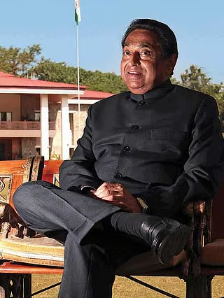

The Life and Legacy of a Political Stalwart
Origins
Kamal Nath was born on November 18, 1946, in the industrial city of Kanpur, Uttar Pradesh, into a family rooted in enterprise and ambition. His father was a successful businessman whose commercial endeavours provided the young Kamal Nath with both material comfort and, more importantly, an early understanding of how institutions function, how decisions carry consequences, and how discipline and foresight can shape outcomes. Growing up in a business household in post-independence India instilled in him a pragmatic approach to problem-solving that would later distinguish his political style from that of his peers.
The India into which Kamal Nath was born was a nation barely a year removed from the trauma of Partition and the euphoria of Independence. The Nehruvian era was taking shape, with grand projects of nation-building, industrial development, and social reform defining the zeitgeist. For a young boy growing up in one of the great industrial centres of northern India, these currents were not abstract ideas read about in textbooks; they were lived realities. Kanpur in the late 1940s and 1950s was a city of textile mills, leather factories, and commerce, a place where the collision between traditional Indian society and modern industrial aspiration was most visceral.
The formative years of Kamal Nath's childhood were marked by the atmosphere of optimism and idealism that pervaded newly independent India. The stories of the freedom struggle, the sacrifices of the independence movement, and the Gandhian values of service and self-reliance were part of the cultural fabric in which he was raised. His family, while oriented toward business, was not insular; conversations about the nation's trajectory, about the responsibilities of the privileged toward the less fortunate, and about the meaning of the new republic were commonplace. It was in this environment that the seeds of political consciousness were first planted in the young Kamal Nath, long before he would formally enter the arena of public life.
His father's business acumen gave Kamal Nath early exposure to the workings of commerce, negotiation, and stakeholder management. These were skills that would prove invaluable in his political career, enabling him to navigate the complex landscape of Indian politics with a rare combination of idealism and practical competence. The household valued education, hard work, and social responsibility, principles that would become the cornerstones of Kamal Nath's public persona in the decades to come.
Foundation
Kamal Nath's formal education began at The Doon School in Dehradun, one of India's most prestigious and selective boarding schools. Founded in 1935 by Satish Ranjan Das with the encouragement of leaders of the Indian National Congress, The Doon School was conceived as an institution that would produce young men capable of leading an independent India. The school's ethos combined rigorous academic training with an emphasis on character building, leadership, and social awareness.
At Doon, the young Kamal Nath was exposed to a cosmopolitan milieu that drew students from across the subcontinent. The school's culture of debate, its emphasis on extracurricular engagement, and its expectation that students would develop a sense of responsibility toward the broader community left an indelible mark on him. Many of India's most distinguished politicians, diplomats, and business leaders passed through the corridors of Doon, and Kamal Nath absorbed the institution's ethos of service and leadership that would become defining features of his public life.
Following his years at Doon, Kamal Nath pursued higher education at the University of Calcutta, attending the renowned St. Xavier's College. Calcutta in the 1960s was the intellectual capital of India, a city of fervent political debate, literary salons, and ideological contestation. It was a place where Marxism, Nehruvian socialism, and Gandhian ideals clashed and coexisted in the coffee houses and university corridors.
The experience of studying in Calcutta broadened Kamal Nath's horizons in ways that went far beyond the formal curriculum. He was exposed to the vibrant student politics of Bengal, to the intellectual traditions of one of India's greatest centres of learning, and to the lived realities of poverty and inequality that existed alongside Calcutta's cultural richness. This juxtaposition sharpened his understanding of the challenges facing India and deepened his conviction that meaningful change required not just idealism but organised, strategic action.
The combination of Doon's disciplined leadership training and Calcutta's intellectual ferment produced in Kamal Nath a distinctive synthesis: a leader who could think strategically and act decisively, who valued both the power of ideas and the necessity of practical organisation. His education gave him the vocabulary and the frameworks to engage with India's most pressing challenges, and it connected him to a network of similarly motivated individuals who would become his allies, collaborators, and counterparts throughout his career. In many ways, the trajectory of Kamal Nath's public life can be traced back to the foundations laid during these formative educational years.
True leadership is not about wielding power but about empowering others. The measure of a leader is not what he achieves for himself, but what he enables his people to achieve.
— Kamal Nath
The Calling
Kamal Nath's formal entry into politics came through the Indian Youth Congress, the youth wing of the Indian National Congress party. As a young man possessed of both ambition and organisational talent, he quickly rose through the ranks of the Youth Congress, demonstrating a capacity for mobilisation, coalition-building, and grassroots engagement that set him apart from many of his contemporaries. His work with the Youth Congress brought him into contact with the party's leadership at the highest levels and established his reputation as a reliable, competent, and energetic political organiser.
The Youth Congress in the 1960s and early 1970s was a crucible for an entire generation of Indian political leaders. It was a space where young men and women could test their ideas, hone their rhetorical skills, and build the networks that would sustain their careers for decades. For Kamal Nath, the Youth Congress served as both training ground and launching pad, providing him with the practical political education that complemented his formal academic training.
One of the most significant dimensions of Kamal Nath's early political career was his developing relationship with the Nehru-Gandhi family, the dynastic core of the Indian National Congress. His closeness to the family gave him access to the highest corridors of power in Indian politics and placed him at the centre of the party's decision-making apparatus. This relationship was not merely one of patronage; it was built on mutual trust, shared political values, and a demonstrated record of competence and loyalty.
Kamal Nath's association with the Congress party's first family gave him a vantage point from which he could observe and participate in the great political dramas of the era. From the consolidation of Indira Gandhi's leadership in the late 1960s through the tumultuous events of the following decades, Kamal Nath was a participant and witness to the most consequential chapters of post-independence Indian political history. His proximity to power, combined with his own considerable abilities, made him an indispensable figure within the Congress organisation.
The period of the Emergency (1975-77), when civil liberties were suspended and democratic norms were tested as never before in independent India, was a defining moment for Kamal Nath's generation of Congress leaders. The Emergency and its aftermath forced every politician of that era to confront fundamental questions about democracy, power, and the limits of political authority. For Kamal Nath, who remained within the Congress fold through this period, the experience deepened his understanding of the complexities and responsibilities of political leadership.
In the years following the Emergency, as the Congress party regrouped and rebuilt under the leadership of Indira Gandhi, Kamal Nath played an increasingly important role in the party's organisational machinery. His ability to manage complex political situations, to mediate between competing factions, and to deliver results on the ground made him a valued asset. It was during this period that he began to earn the reputation as a "crisis manager," a leader who could be relied upon to navigate the most difficult political terrain.
Beyond the high-profile political moments, much of Kamal Nath's early career was devoted to the unglamorous but essential work of party building. He travelled extensively, built relationships with local leaders across the country, and developed an intimate understanding of the diverse political landscape of India. This grassroots engagement was not a burden for him but a passion; he genuinely relished the process of connecting with people, understanding their concerns, and translating those concerns into political action.
His organisational work during this formative period established patterns that would define his entire career: meticulous attention to detail, a willingness to invest time in building relationships, and an insistence on delivering tangible results rather than empty promises. These qualities, forged in the crucible of early political engagement, would serve him well as he ascended to the highest levels of Indian politics.
Alka Nath — Wife and steadfast partner in public life
Nakul Nath — Eldest son, politician and Member of Parliament from Chhindwara, carrying forward the family's legacy of service
Bakul Nath — Son, contributing to the family's tradition of enterprise and public engagement
The Private Man
Behind the public persona of the seasoned politician lies a devoted family man. Kamal Nath's marriage to Alka Nath has been a partnership that extends beyond the personal into the public sphere. Alka Nath has been a constant source of support and counsel, providing the stability and grounding that enabled Kamal Nath to navigate the demanding and often unpredictable world of Indian politics. Their partnership reflects a shared commitment to the values of service, integrity, and responsibility that have defined Kamal Nath's public life.
The couple's two sons, Nakul and Bakul, have grown up in the intersection of public service and private life. Nakul Nath, the elder son, has followed his father into politics, representing Chhindwara as a Member of Parliament and carrying forward the deep connection between the Nath family and the people of the constituency. Nakul's entry into politics was not merely a matter of dynastic succession; it represented a genuine continuation of the family's commitment to the development and welfare of Chhindwara and its people. Bakul Nath, while pursuing his own path, has contributed to the family's broader engagement with enterprise and public life.
Kamal Nath's personal values reflect the synthesis of the various influences that have shaped him: the business pragmatism of his father, the disciplined leadership ethos of Doon, the intellectual engagement of Calcutta, and the Gandhian-Nehruvian ideals of the Congress tradition. He is known among associates and colleagues as a man of his word, someone who values relationships and reciprocity, and who approaches both personal and professional interactions with a combination of warmth and decisiveness. His lifestyle, while comfortable, has been characterised by a focus on work and public engagement rather than ostentation.
Chhindwara is not merely a constituency to me; it is my home, my family, and the mirror in which I see reflected the aspirations and struggles of all of India.
— Kamal Nath
The Unbreakable Bond
The story of Kamal Nath and Chhindwara is one of the most remarkable relationships between a politician and a constituency in the history of Indian democracy. When Kamal Nath first chose to contest from Chhindwara, a predominantly tribal, forested, and economically underdeveloped district in the south-eastern reaches of Madhya Pradesh, many within political circles were surprised. Chhindwara was not the kind of constituency that a well-connected, urban-educated leader would typically gravitate toward. It was remote, largely rural, and far removed from the centres of power in Delhi.
But Kamal Nath saw something in Chhindwara that others did not: a community of immense resilience, a landscape of untapped potential, and a people who deserved a champion in the corridors of power. His decision to contest from Chhindwara was not a calculated political move but a genuine commitment to a place and a people. This commitment would be tested and vindicated repeatedly over the following decades.
Kamal Nath first won the Chhindwara Lok Sabha seat in 1980, and what followed was an electoral record unmatched in the annals of Indian parliamentary democracy. He won nine consecutive elections from the constituency, a feat that speaks not just to his political acumen but to the depth of the bond he built with the people of Chhindwara. In a country where anti-incumbency is a powerful force and where voters are often quick to punish perceived failures, Kamal Nath's unbroken string of victories is a testament to the trust he earned and the results he delivered.
Each election was a reaffirmation of the covenant between Kamal Nath and the people of Chhindwara. Voters returned him to Parliament election after election not out of habit or compulsion, but because they could see the tangible changes in their lives and their community. Roads were built, schools were established, healthcare facilities were expanded, and the basic infrastructure of development was laid down in a district that had long been neglected. Kamal Nath's victories were not won in the weeks before an election; they were won in the years between elections, through sustained, visible engagement with the constituency and its needs.
When Kamal Nath first arrived in Chhindwara, the district was among the most backward in Madhya Pradesh, a state that itself ranked among India's least developed. The district lacked basic infrastructure: roads were scarce, healthcare was rudimentary, and educational opportunities were severely limited, particularly for the tribal communities that constituted a significant portion of the population.
Over the decades of Kamal Nath's representation, Chhindwara underwent a remarkable transformation. The district saw the construction of roads connecting remote villages to market centres, the establishment of educational institutions from primary schools to colleges, the expansion of healthcare facilities, and the development of irrigation systems that transformed agricultural productivity. Industry and commerce were attracted to the district, creating employment opportunities and economic dynamism that had previously been absent.
The transformation of Chhindwara was not the work of a single individual; it was the product of the collective effort of a community that believed in its own potential. But it is equally true that none of it would have been possible without the sustained commitment, the political capital, and the sheer persistence of Kamal Nath. He brought to Chhindwara not just government resources and political influence, but a vision of what the district could become and the determination to make that vision a reality.
The relationship between Kamal Nath and the people of Chhindwara transcends the transactional nature of most politician-constituency relationships. Over more than four decades, Kamal Nath has become woven into the social fabric of the district. He is present not just at election time but during festivals, in times of crisis, and in the everyday life of the community. The people of Chhindwara do not regard him merely as their representative; they regard him as one of their own, a sentiment that no amount of political strategy can manufacture and that only genuine, sustained engagement can create.
The Leader
Among the many qualities that have defined Kamal Nath's political career, his organisational abilities stand foremost. In a party as vast and complex as the Indian National Congress, with its myriad factions, regional interests, and competing ambitions, the ability to organise, coordinate, and deliver is a rare and invaluable skill. Kamal Nath possesses this skill in abundance. Whether managing election campaigns, coordinating legislative strategy, or building consensus on contentious issues, he has consistently demonstrated a capacity for execution that has earned him the respect of allies and adversaries alike.
Within the Congress party, Kamal Nath has long been known as the leader you call when things go wrong. His reputation as a "crisis manager" is built on decades of stepping into difficult situations and finding solutions where others saw only problems. Whether it was navigating internal party disputes, managing coalition dynamics, or addressing political challenges at the state or national level, Kamal Nath has repeatedly demonstrated the temperament, the political acumen, and the interpersonal skills necessary to resolve crises and restore stability.
Kamal Nath's temperament is fundamentally diplomatic. He prefers dialogue to confrontation, consensus to diktat, and persuasion to coercion. This approach has made him effective not only in domestic politics but in international settings as well, particularly during his tenure as Minister of Commerce and Industry when he represented India in complex multilateral trade negotiations. His ability to maintain relationships across the political spectrum, to find common ground with diverse stakeholders, and to build bridges where others build walls is one of his most distinctive characteristics.
They call him the Maharaja of Chhindwara, not for the grandeur of his lifestyle, but for the sovereignty of his commitment to the people he serves.
— Political observers on Kamal Nath
The title "Maharaja of Chhindwara," often used to describe Kamal Nath, captures the unique position he holds in the political landscape of the region. It is a title bestowed not by protocol but by the people, reflecting their recognition of his transformative impact on the district and the enduring nature of his commitment. The title speaks to the near-complete identification between the man and the constituency, a relationship so deep and so sustained that it has become a defining feature of both Kamal Nath's identity and Chhindwara's political character.
Yet the title also speaks to the respect Kamal Nath commands beyond Chhindwara. In the corridors of power in New Delhi, in the Congress party's organisational meetings, and in international forums, Kamal Nath is recognized as a leader of substance and stature. His career, spanning more than five decades, stands as a testament to what sustained commitment, organisational excellence, and genuine connection with the people can achieve in the world's largest democracy. He remains, in the truest sense of the phrase, a political stalwart whose life and legacy continue to shape the trajectory of Indian public life.